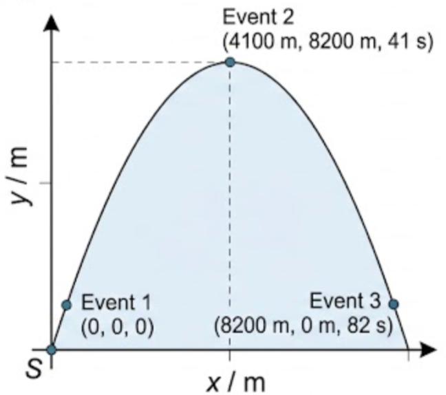
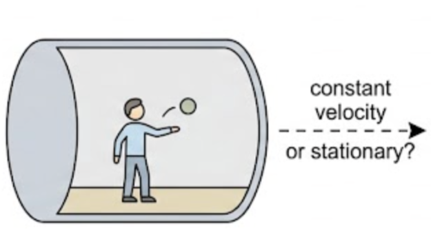
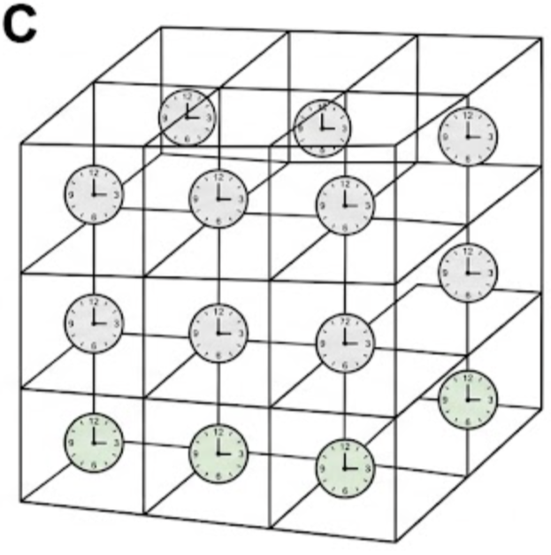

🎯 Hook – banging your head on the luggage rack
Walk down the aisle of a moving train and bang your head twice on bags sticking out of the overhead rack. What was your speed at each bang, and how far apart were the two bangs? The answer depends entirely on who is doing the measuring and from where — a passenger in their seat, a passenger walking beside you, and someone standing on the platform outside will all record different numbers for your position and your speed.

📐 The revolution of special relativity
Before 1905, Newtonian mechanics accurately described and predicted motion as it was then understood. But Newton's theories cannot be applied accurately to objects moving very fast — with speeds close to the speed of light. This is called relativistic motion. Einstein's theory of special relativity (1905) was a complete revolution in scientific thinking, triggered partly by the unexpected discovery that the speed of light is the same for all observers. One consequence is that all motion is relative — there is no "correct" point of view, and nowhere in the Universe is at absolute rest.
To talk about motion precisely, physics defines a small set of terms that this whole topic is built on:
You will usually have assumed objects move over the stationary surface of the Earth — the Earth's surface was your reference frame, and displacement, velocity and acceleration were all relative to a fixed point on it. A reference frame is a coordinate system that allows a single value of time and position to be assigned to an event. Reference frames are drawn as a set of axes, usually labelled S or S′, as in Fig A5.1.
To fully define a four-dimensional reference frame you must specify: the origin; the directions of the x-, y- and z-axes; and the event from which the measurement of time, t, is started.
Figure A5.1 uses only the x- and y-axes, with the Earth's surface as the reference frame. But we could equally use the rocket's reference frame, in which the rocket is stationary and the Earth is seen to move — at the same speed, in the opposite direction.
📈 Reading a coordinate diagram
| Diagram type | Axes (X, Y) | Shape | What to read |
|---|---|---|---|
| Trajectory diagram (reference frame S) | Horizontal position x / m · Vertical position y / m | Parabola for a projectile under gravity alone | Peak = maximum height; the curve is symmetric about the peak |
| Position–time graph | Time t / s · Position x or y / m | Straight line for constant velocity; curve for accelerated motion | Gradient = velocity in that direction at that instant |
✍️ Worked example A5.1 – coordinates of an unpowered rocket
In reference frame S shown in Fig A5.1, calculate the x-, y- and t-coordinates of an unpowered rocket at three events. The rocket has an initial vertical velocity of 400 m s⁻¹ and a horizontal velocity of 100 m s⁻¹. Ignore air resistance.
height \(y = 8200\) m. Using \(s = \tfrac{(u+v)}{2}t\): time to the top \(t = 41\) s.
Event 2 coordinates: (4100 m, 8200 m, 41 s).
Event 3 coordinates: (8200 m, 0 m, 82 s).
🌍 Real-world: the three observers on a train
Observer — often a hypothetical person who takes measurements from only one specific reference frame. An observer is always stationary relative to their own reference frame. In the train example there are three possible reference frames: an observer on the platform as the train passes, an observer sitting in a seat, and an observer walking up the train at your walking speed.
According to Newton, each observer records different values for how fast you are moving and your position when you bang your head. But all three agree on the time between the two bangs and the distance you moved up the carriage between them.
🚀 HL Extension – no windows, no way to tell
Consider an observer in a windowless space vehicle in deep space, where gravitational effects are negligible (Fig A5.2). Can they tell if the vehicle is "stationary", moving at constant velocity, or accelerating? If it moves at constant velocity, an object released in mid-air stays exactly where it was released — indistinguishable from being "stationary". There is no such thing as absolute rest: it can never be distinguished from motion at constant velocity.
Challenge: if the vehicle instead accelerates, what does the observer see happen to the released object, and why? A resultant force from the engines accelerates the vehicle and its walls, but the released object has no force acting on it, so it keeps its original motion — the observer sees it drift "backwards" relative to the accelerating vehicle. For an observer in an accelerating frame, Newton's laws of motion appear to be broken.
🔭 Inertial reference frames
The problem most students have with relativity is instinctively treating the ground they stand on as "not moving" — the one correct frame. It needs to be repeatedly stressed that all reference frames are equally valid; there is no "correct" reference frame.

If truly stationary places existed, they would be perfect inertial frames. But a frame moving with constant velocity (zero acceleration) fulfils the same purpose. Every reference frame discussed in the rest of Topic A.5 is inertial. For non-relativistic applications, we usually treat the Earth's surface as an inertial reference frame, despite its own motion — it is such a good approximation that the small acceleration goes unnoticed.
⏳ Newton's assumptions about time and space
Postulate (or axiom) — an unproven assumption accepted as true and used as a starting point for further discussion. Before Einstein, Newton's description of the Universe rested on two such assumptions, and everybody still uses them in everyday life:

🤔 TOK – a clockwork universe of postulates?
Do the natural sciences rely on assumptions that are themselves unprovable by science? Postulates and axioms are usually simple, unambiguous statements agreed by everybody at the time, considered necessarily true in the sense that they are logically necessary — even though they are not directly provable. An historical example, from Euclid more than two thousand years ago: a straight line can be drawn from any one point to any other point. Such foundational statements in mathematics are called axioms, and they are the starting point for all the more advanced reasoning built on top of them — exactly the role Newton's two postulates play here, and the role that Einstein's postulates (next lesson) will replace them with.
⚠️ Trap corner – common mistakes
| Misconception | Correct view |
|---|---|
| The Earth's surface is the "real" reference frame | All reference frames are equally valid. The Earth's surface is only a convenient one for everyday, non-relativistic problems |
| An "event" is anything that takes some time, like a whole train journey | An event is instantaneous — it happens at one precise time and one precise point in space, like a flash of light or a collision |
| A satellite in orbit is an inertial frame because it moves smoothly | An orbiting satellite is accelerating (centripetal acceleration), so it is not a true inertial frame, even though it feels smooth to anyone inside |
| "Stationary" and "moving at constant velocity" are physically different states | They are indistinguishable from inside a windowless frame — there is no experiment that can tell absolute rest apart from constant-velocity motion |
Complete the statements:
✓ \(x = 805\ \text{m}\); the event is (805 m, 23.0 s).
✓ Relative to the stationary pedestrian's frame, the tomato's velocity is the car's velocity plus the throw velocity: \(16 - 4 = 12\ \text{m s}^{-1}\) still in the car's original direction of travel.
✓ Since this is still positive (forwards), the tomato continues moving away from the pedestrian rather than back towards them.
✓ (b) Truly inertial — constant velocity, zero acceleration.
✓ (c) Clearly not inertial — orbital motion requires a continuous centripetal acceleration towards the Earth.
✓ (d) Clearly not inertial — an extremely strong gravitational field is present, and the probe must accelerate/thrust to hover.
✓ (e) Almost inertial — over the short straight section it travels effectively at constant velocity, but strictly this holds only locally; any bending section of the accelerator would not be inertial.